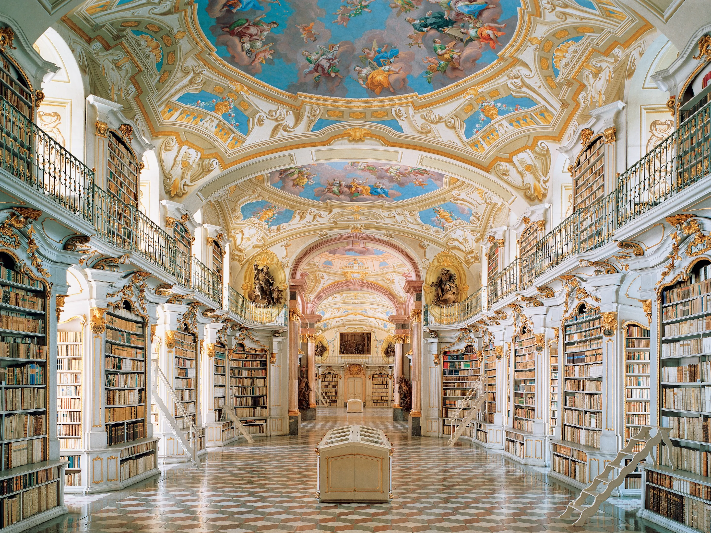

Istorija knjižare
Tajna knjižara otvorila je svoja vrata pre mnogo godina, ali njena istorija počinje mnogo pre toga – u skrivenim kutcima prošlosti, gde su reči čuvale tajne koje su samo odabrani mogli razumeti. Naša knjižara je stvorena iz ljubavi prema knjigama, ali i iz želje da podelimo s vama ne samo priče, već i misterije koje one kriju.
Neki od žanrova koje možete očekivati su:
- Romansa
- Fantazija
- Avanturistički
- Istorijski
- Trileri i mnogi drugi
